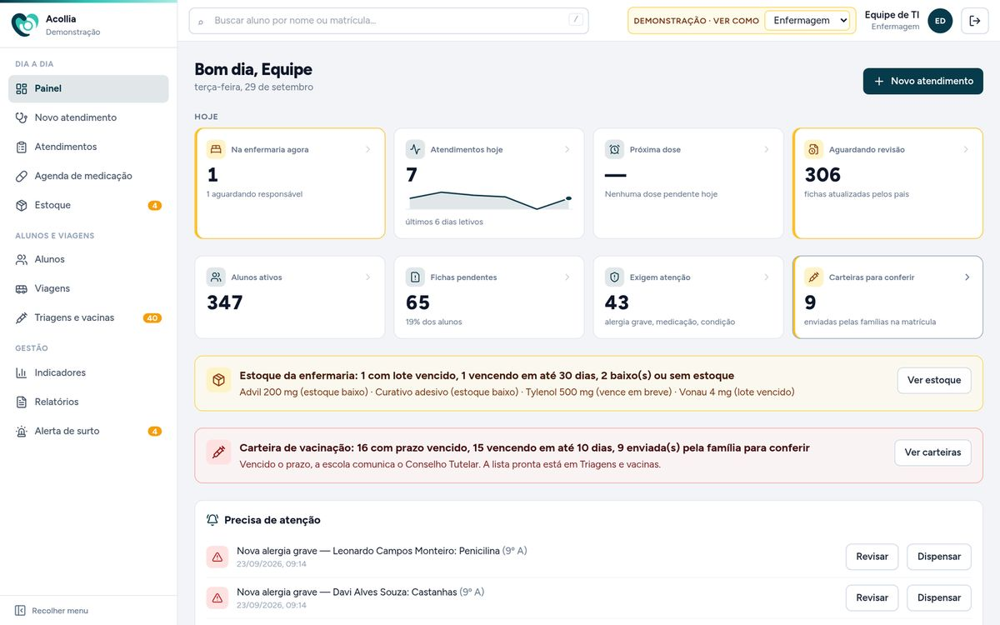
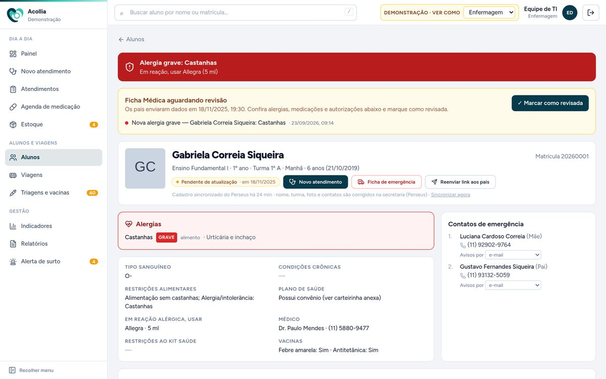
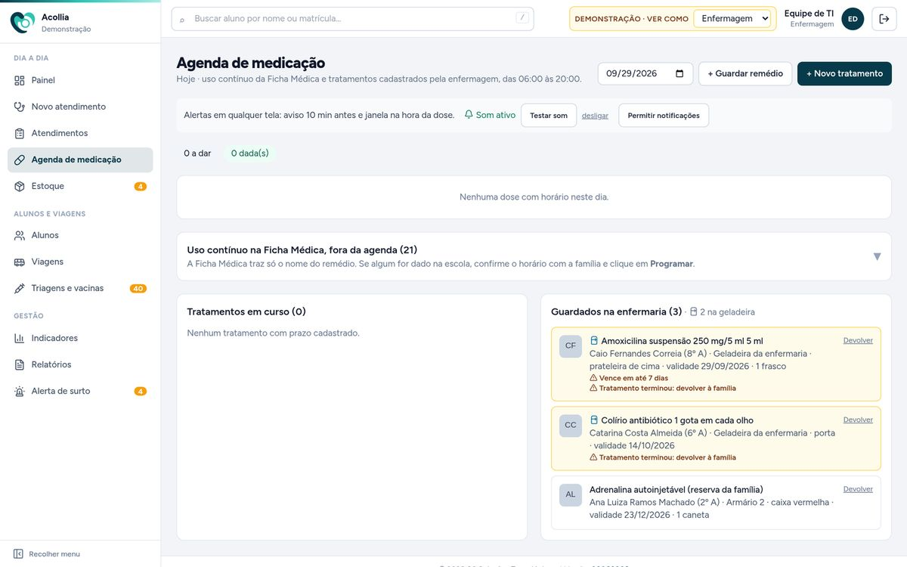
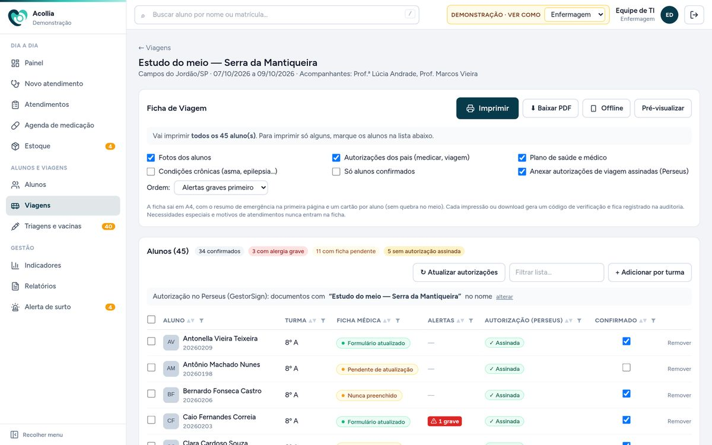
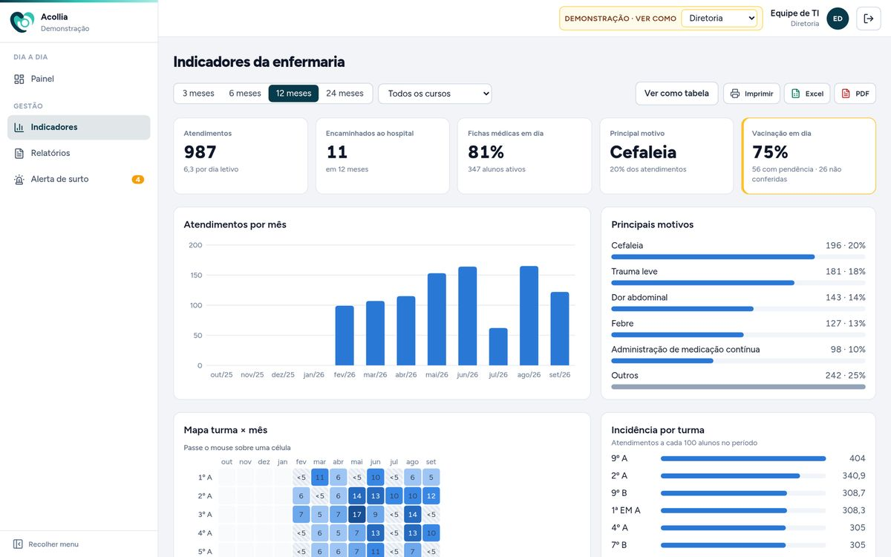
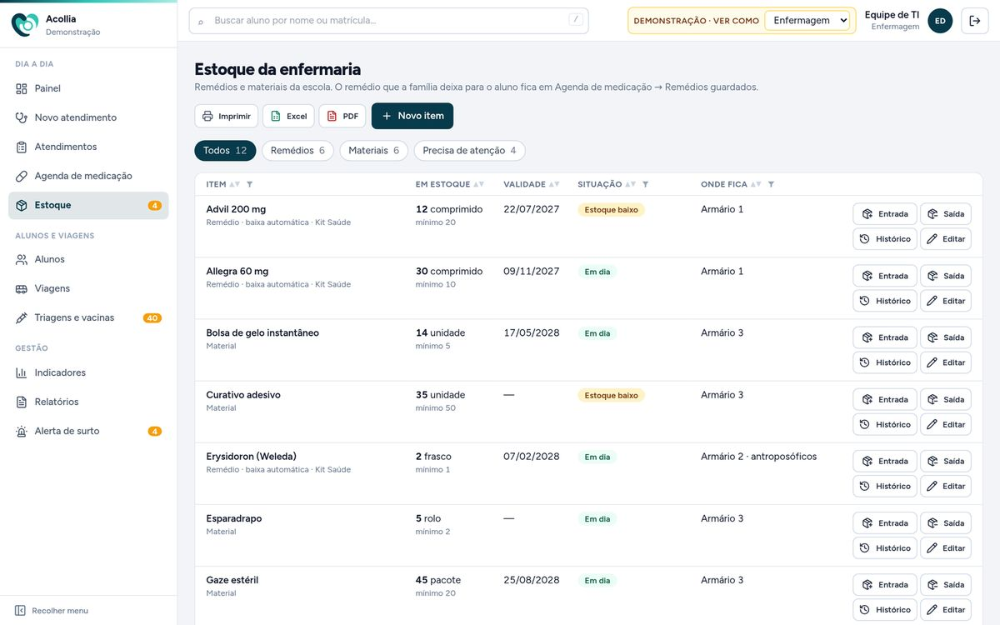
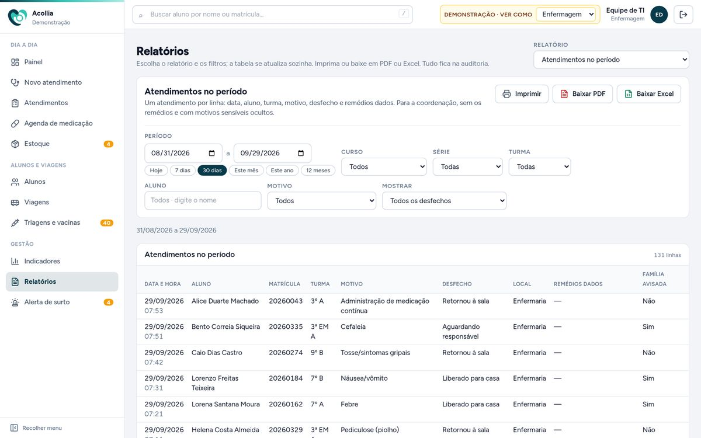

Atendimento rápido e seguro
Sinais vitais, queixa, conduta e remédio dado. O sistema confere as alergias antes de registrar a medicação e imprime o protocolo para o aluno levar ao professor.
A Acollia reúne num só lugar os atendimentos da enfermaria, as fichas médicas atualizadas pelas famílias, a agenda de remédios, a vacinação e as fichas de viagem. A família é avisada na hora e os dados de saúde ficam protegidos.

Registra o atendimento em poucos toques, com alergias e remédios do aluno sempre à vista.
Acompanha passagens pela enfermaria e prepara viagens, sem acesso a detalhes clínicos.
Vê indicadores por mês, por turma e por motivo, e é avisada quando algo foge do normal.
Atualizam a ficha médica por um formulário e recebem aviso por e-mail ou WhatsApp.
Cuida de usuários, perfis, integrações e da identidade visual da escola.
Sinais vitais, queixa, conduta e remédio dado. O sistema confere as alergias antes de registrar a medicação e imprime o protocolo para o aluno levar ao professor.
As famílias preenchem a ficha num formulário online e ela entra sozinha no prontuário. A enfermagem revisa o que mudou, e alergias graves ganham destaque em todas as telas.
Remédios de uso contínuo e tratamentos com horário. Aviso sonoro antes da dose, alerta de atraso e controle dos remédios guardados na enfermaria.
Situação vacinal de cada aluno, carteira enviada pela família na matrícula e controle do prazo legal, com a lista pronta para comunicar o Conselho Tutelar.
Para cada turma: foto, contatos, alergias, tipo sanguíneo, remédios e autorizações assinadas. Imprime, baixa em PDF ou abre sem internet no tablet do professor.
Remédios e materiais por lote. O estoque baixa sozinho quando o remédio é dado e avisa sobre vencimentos e itens abaixo do mínimo.
Percebe quando febre, piolho, conjuntivite ou virose aumentam numa turma e sugere o comunicado às famílias, sem expor nomes.
Atendimentos por mês, turma e motivo, acidentes, vacinação e estoque. Tudo com filtros, para imprimir ou baixar em PDF e Excel.
Uma folha com o essencial para o SAMU ou o hospital: alergias, condições, remédios e contatos, pronta para imprimir no momento em que precisa.
Imagens da versão de demonstração, com alunos e dados fictícios.
Tudo de saúde do aluno numa página, com o que é urgente no topo.

Doses do dia, tratamentos em curso e remédios guardados, com aviso de validade e de devolução à família.

Escolha a turma e o que entra na ficha. Ela sai com as autorizações de viagem já assinadas pelas famílias.

Para a direção: o que mais leva alunos à enfermaria, em que turmas e em que meses, com números pequenos protegidos para ninguém ser identificado.

Saldo por item e lote, com o que vence primeiro e o que precisa comprar.

Relatórios prontos com filtros por período, turma, aluno e motivo. Imprima ou baixe em PDF e Excel.

A proteção está no próprio sistema, e não depende de cada pessoa lembrar das regras.
Enfermagem, coordenação, direção e TI têm acessos diferentes, e o servidor bloqueia o que não é permitido.
Informações de saúde e arquivos são guardados criptografados e trafegam só por conexão segura.
Quem viu, alterou, imprimiu ou exportou cada ficha fica na auditoria.
Login com a conta Microsoft da escola ou com senha e verificação em duas etapas.
Relatórios sem texto clínico livre e números pequenos ocultos para quem só vê indicadores.
Backup cifrado automático, para nada se perder.
Alunos, turmas e documentos vêm do sistema acadêmico. As fichas das famílias chegam pelo formulário online. Não é preciso digitar tudo de novo.
Mostro o sistema em uma conversa de 30 minutos, com a rotina da sua enfermaria em mente.